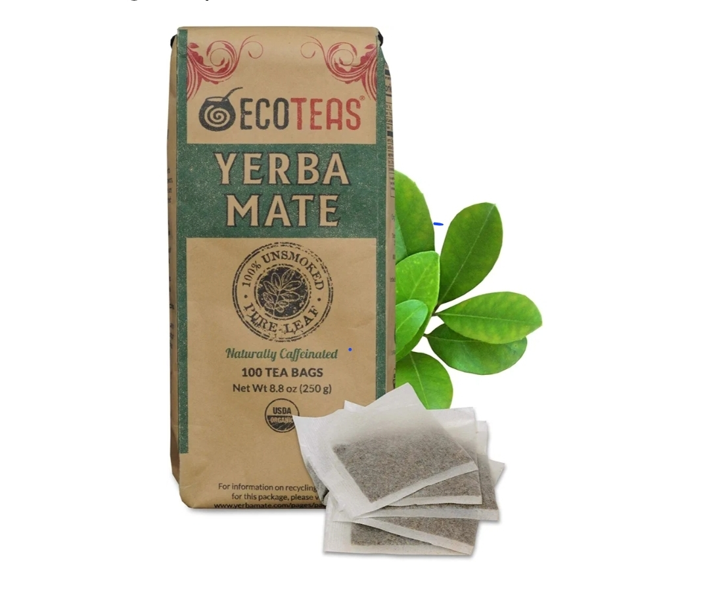
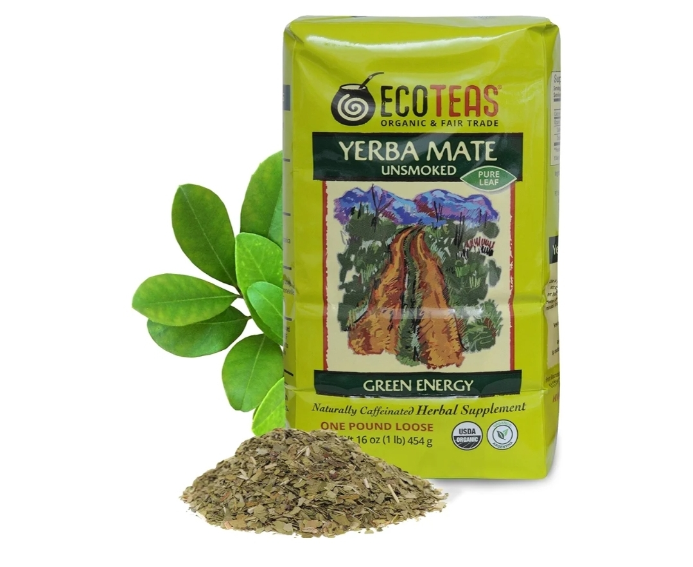
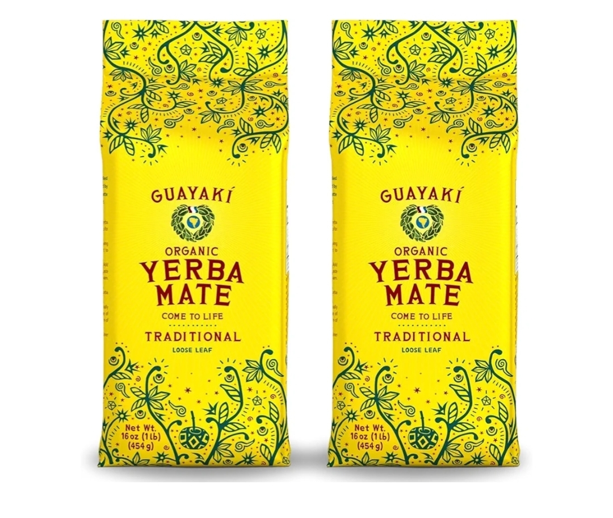

If you rely on coffee but hate the crash, jitteriness, or dependency cycle, yerba mate is worth your attention. Traditionally consumed in South America, this botanical delivers a unique combination of caffeine, theobromine, polyphenols, and chlorogenic acids that support smoother, sustained energy.
The difference is not hype. It is chemistry. Yerba mate stimulates alertness while also delivering antioxidant compounds that coffee lacks in meaningful amounts.
So if you’re looking for the best yerba mate in 2026, organic, non-GMO, and carefully processed, this guide covers the top options for smooth, sustained energy and health benefits.
“Yerba mate contains xanthines, polyphenols, and saponins that contribute to its stimulant and antioxidant activity.” – Journal of Food Science
Why Trust Wise & Healthy Living?
Our recommendations are based on ingredient transparency, third-party certifications, sourcing practices, and long-term consumer feedback.
- ✔ Organic and non-GMO certification review
- ✔ Brand sourcing and sustainability practices
- ✔ Processing methods and drying techniques
- ✔ Independent consumer review analysis
- ✔ Ingredient purity and additive screening
We do not accept payment for favorable rankings. Some links may earn a commission at no additional cost to you.
Why People Switch to Yerba Mate
The Top Health Benefits of Yerba Mate
- Smoother Energy: Natural caffeine combined with theobromine may reduce harsh spikes.
- Improved Focus: Supports cognitive performance and alertness.
- Metabolic Support: Research suggests potential support for fat oxidation.
- Antioxidant Density: Comparable to green tea in ORAC value.
- Digestive Stimulation: Traditionally used to stimulate bile flow.
🏆 Quick Picks Summary
Best Overall: ECOTEAS Organic Yerba Mate Tea Bags – Convenient, smooth flavor, certified organic.
Best Traditional Experience: ECOTEAS Loose Leaf – Ideal for gourd brewing and stronger infusions.
Most Recognized Brand: Guayakí Traditional Loose Leaf – Widely available, socially responsible sourcing.
These recommendations are based on organic certification, sourcing transparency, user reviews, and ingredient purity.
Best Yerba Mate on Amazon (Compared)
Top Rated Organic Yerba Mate for 2026
Disclosure: As an Amazon Associate, we earn from qualifying purchases.
Below are the highest-rated options currently available on Amazon.
| Product | Best For | Type | Action |
|---|---|---|---|
| Organic Traditional Cut | Classic experience | Loose Leaf | Check Price → |
| Smokeless / Low-Dust | Smoother taste | Refined Cut | Check Price → |
| Beginner Tea Bags | Convenience | Tea Bags | Check Price → |
This page contains affiliate links. We may earn a commission if you purchase through these links at no additional cost to you.

ECOTEAS Organic Yerba Mate Tea Bags
Convenient tea bags, USDA Organic, Non-GMO, smoke-free processing. Beginner-friendly and trusted by health-conscious users.

ECOTEAS Organic Loose Leaf Yerba Mate
Traditional loose leaf mate, USDA Organic, Non-GMO, smoke-free. Ideal for gourds, French presses, or brewing strong infusions.

Guayakí Organic Traditional Yerba Mate
USDA Organic, ethically sourced, loose leaf mate. Strong brand recognition and ideal for health-conscious and eco-aware users.
How to Start Without Overdoing It
How to Brew Yerba Mate for Maximum Benefits
Yerba mate contains caffeine. If you are sensitive, start small.
- Start with 1 teaspoon loose leaf.
- Use water below boiling (around 160–170°F).
- Drink earlier in the day to avoid sleep disruption.
- Avoid combining with high-caffeine pre-workouts.
If you want sustained energy without the crash cycle, yerba mate is one of the most practical botanical upgrades available.